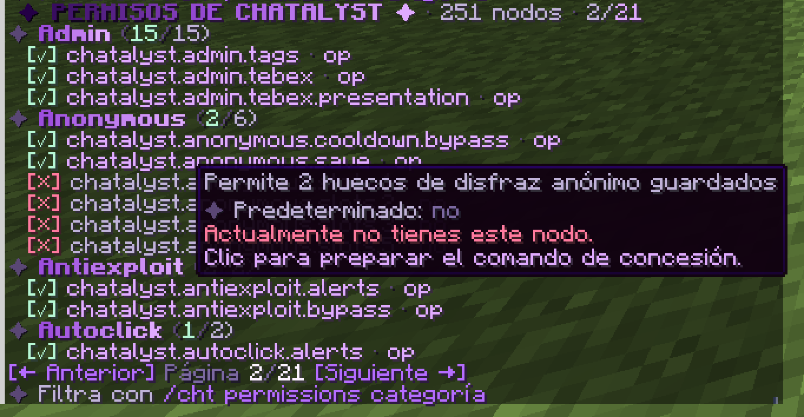

Esta lista se genera sola a partir del plugin. todos significa que cualquier jugador lo tiene de serie, op que solo los operadores, y nadie que tienes que darlo tú. Concede nodos con tu plugin de permisos, por ejemplo /lp group default permission set chatalyst.command.msg true. En el juego, /cht permissions enseña la misma lista y cuáles tienes. Haz clic en un nodo para poner en tu chat el comando que lo concede (Permissions_List.Grant_Command en config.yml).

| Permiso | Por defecto | Qué desbloquea |
|---|---|---|
chatalyst.admin | op | Acceso a los comandos de administración |
chatalyst.fancyjoin.owner | nadie | Entrada vistosa de nivel dueño al conectarse |
chatalyst.fancyjoin.admin | nadie | Entrada vistosa de nivel administrador al conectarse |
chatalyst.fancyjoin.vip | nadie | Entrada vistosa de nivel VIP al conectarse |
chatalyst.book.admin | op | Crear, editar, guardar, borrar y abrir a los jugadores los libros configurados |
chatalyst.admin.network | op | Acceso a todas las funciones de administración de la red |
chatalyst.admin.network.monitor | op | Ver en la GUI de administración el historial de chat de cada servidor |
chatalyst.admin.network.monitor.server.* | op | Ver y suscribirse al chat de todos los servidores |
chatalyst.admin.network.monitor.channel.* | op | Ver todos los canales de los servidores permitidos |
chatalyst.admin.network.announce | op | Enviar composiciones de /announce a todos los servidores a través del proxy |
chatalyst.admin.staff.directory | op | Ver en la GUI de administración el directorio de staff de la red en vivo |
chatalyst.admin.staff.teleport | op | Teletransportarse a miembros del staff de otros servidores desde la GUI de administración |
chatalyst.admin.players | op | Acceso a todas las funciones del directorio de jugadores de la red |
chatalyst.admin.players.directory | op | Explorar los jugadores conectados agrupados por servidor |
chatalyst.admin.players.teleport | op | Teletransportarse a jugadores en local o a través del puente nativo del proxy |
chatalyst.admin.players.server.* | op | Ver en el directorio de la red a los jugadores de todos los servidores |
chatalyst.staff.mentionable | nadie | Marca un grupo de LuckPerms como mencionable para escalar al staff |
chatalyst.support.staff | op | Recibir, responder y cerrar solicitudes privadas de soporte |
chatalyst.support.tier.helper | nadie | Recibir solicitudes de soporte durante la etapa de prioridad de ayudante |
chatalyst.support.tier.mod | nadie | Recibir solicitudes de soporte durante la etapa de prioridad de moderador |
chatalyst.support.tier.admin | nadie | Recibir solicitudes de soporte durante la etapa de prioridad de administrador |
chatalyst.support.tier.owner | nadie | Recibir solicitudes de soporte durante la etapa de prioridad de dueño |
chatalyst.chat.color | op | Usar colores y MiniMessage en el chat |
chatalyst.chat.color.others | op | Cambiar el color de chat de otro jugador (/chatcolor ) |
chatalyst.chat.links | op | Hacer clicables las URL que escribes en el chat |
chatalyst.chat.item | todos | Mostrar en el chat el objeto que sostienes escribiendo [item] |
chatalyst.chat.pixel | todos | Usar tokens de chat de estilo píxel como [creeper] y :heart: |
chatalyst.chat.emoji | todos | Usar emojis :nombre: en el chat |
chatalyst.deletemessages | op | Ver y usar el botón de borrar mensajes del chat |
chatalyst.channel.staff | op | Acceso al canal de staff |
chatalyst.channel.send | op | Enviar a un canal sin unirse a él (/channel send) |
chatalyst.channel.sendas | op | Enviar a un canal haciéndose pasar por un jugador (/channel sendas) |
chatalyst.channel.seeall | nadie | Con Channels.Exclusive activo, seguir recibiendo todos los canales (moderación) |
chatalyst.spy | op | Espiar todo (permiso general) y alternar /spy |
chatalyst.spy.pm | nadie | Espiar solo los mensajes privados |
chatalyst.spy.command | nadie | Espiar solo los comandos |
chatalyst.spy.sign | nadie | Espiar solo los carteles |
chatalyst.spy.book | nadie | Espiar solo los libros |
chatalyst.spy.anvil | nadie | Espiar solo los renombrados en yunque |
chatalyst.spy.channel | op | Ver los mensajes de canales de party y clan mientras el espía está activo |
chatalyst.discord.mention | nadie | Avisar a miembros de Discord escribiendo @nombre en el juego |
chatalyst.spy.container | nadie | Espiar solo las interacciones con contenedores y mecanismos (con coordenadas) |
chatalyst.spy.combat | nadie | Ver una línea en vivo cuando empieza un combate PvP y cuando matan a alguien |
chatalyst.command.containerlog | op | Revisar los registros de contenedores y mecanismos con /containerlog |
chatalyst.containerlog.teleport | op | Usar los botones de teletransporte [Ir]/[TP] en los registros y el espía de contenedores |
chatalyst.containerlog.peek | op | Usar el botón [Ver] para abrir el contenido de un contenedor desde el registro o el espía |
chatalyst.containerlog.exempt | nadie | Las interacciones de este jugador con contenedores y mecanismos nunca se registran |
chatalyst.command.combatlog | op | Revisar los registros de PvP con /combatlog, incluido quién empezó cada combate |
chatalyst.combatlog.teleport | op | Usar los botones de teletransporte [Ir]/[TP] en los registros de combate |
chatalyst.combatlog.exempt | nadie | Los golpes de este jugador nunca se registran (duelos de staff, pruebas) |
chatalyst.chat.shareinv | todos | Compartir en el chat una vista de solo lectura del inventario o el cofre de ender con [inv] / [ec] |
chatalyst.command.anonymous | op | Alternar el modo anónimo para streamers con /anonymous |
chatalyst.anonymous.save | op | Guardar y reutilizar disfraces anónimos (/anon save, set, list, delete) |
chatalyst.anonymous.slots.1 | nadie | Permite 1 hueco de disfraz anónimo guardado |
chatalyst.anonymous.slots.2 | nadie | Permite 2 huecos de disfraz anónimo guardados |
chatalyst.anonymous.slots.3 | nadie | Permite 3 huecos de disfraz anónimo guardados (p. ej. VIP alto / MVP++) |
chatalyst.anonymous.slots.5 | nadie | Permite 5 huecos de disfraz anónimo guardados |
chatalyst.anonymous.cooldown.bypass | op | Cambiar de disfraz anónimo sin esperar Switch_Cooldown_Seconds |
chatalyst.command.marry | todos | Usar /marry y /divorce (la función se activa aparte en players.yml) |
chatalyst.spy.autoenable | nadie | El modo espía empieza activo al conectarte (si lo apagas con /spy, se recuerda) |
chatalyst.seevanished | op | Ver a los jugadores en vanish en las listas y el autocompletado |
chatalyst.notify.rules | op | Recibir un aviso cuando alguien incumple una regla |
chatalyst.notify.security | op | Recibir alertas de intentos de esquivar el filtro del chat |
chatalyst.bypass.ads | op | Saltarse las reglas contra la publicidad |
chatalyst.bypass.spam | op | Saltarse las reglas contra el spam |
chatalyst.bypass.mailcooldown | op | Saltarse la espera entre envíos de correo |
chatalyst.bypass.caps | op | Saltarse el filtro de mayúsculas |
chatalyst.bypass.swear | op | Saltarse el filtro de palabrotas |
chatalyst.bypass.antibot | op | Saltarse el retraso de entrada del anti-bot |
chatalyst.bypass.cooldown | op | Saltarse las esperas de los comandos |
chatalyst.bypass.autoresponse | nadie | Tu chat nunca activa el bot de respuestas automáticas |
chatalyst.bypass.security | nadie | Saltarse la limpieza de seguridad del chat |
chatalyst.bypass.blocker | op | Saltarse el bloqueador de comandos |
chatalyst.bypass.nicktab | op | Ver los nombres reales en vez de los apodos en las sugerencias de TAB |
chatalyst.bypass.reach | op | Escribir a jugadores que te ignoran, tienen los privados apagados o están en vanish |
chatalyst.bypass.range | op | Oír todas las frecuencias locales, no solo la sintonizada (staff) |
chatalyst.bypass.tabcomplete | op | Ver todos los comandos en el autocompletado (saltarse la lista de ocultos) |
chatalyst.bypass.router | op | Tus mensajes nunca se desvían automáticamente del chat global |
chatalyst.report.bypass | op | Saltarse la espera de /report |
chatalyst.command.mute | op | Usar /mute y /unmute |
chatalyst.command.itemwatch | op | Usar /itemwatch para revisar los objetos de un jugador (inventario, cofre de ender, bóvedas) |
chatalyst.itemwatch.alerts | op | Recibir alertas de objetos sospechosos (cantidades absurdas, ganancias rápidas, stacks ilegales) |
chatalyst.itemwatch.bypass | nadie | Los objetos de este jugador nunca se vigilan (organizadores de eventos, constructores) |
chatalyst.command.autoclick | op | Usar /autoclick (/cps) para ver en vivo los clics de un jugador y listar sospechosos recientes |
chatalyst.autoclick.alerts | op | Recibir alertas de autoclick (clics de regularidad mecánica, CPS sostenidos imposibles) |
chatalyst.autoclick.bypass | nadie | Los clics de este jugador nunca se analizan (testers, herramientas de accesibilidad) |
chatalyst.command.antiexploit | op | Usar /antiexploit para listar sospechosos recientes, ver qué está activo y alternar las alertas |
chatalyst.antiexploit.alerts | op | Recibir alertas del anti-exploit (ráfagas de paquetes, objetos o carteles enormes, spam de canales, expulsiones) |
chatalyst.antiexploit.bypass | op | El anti-exploit nunca lo revisa (operadores construyendo en creativo con shulkers grandes, testers) |
chatalyst.command.itemaudit | op | Usar /itemaudit para leer el registro de objetos y modos de juego del staff (no forma parte de chatalyst.staff.*) |
chatalyst.itemaudit.alerts | op | Recibir alertas en vivo cuando el staff saca objetos de la nada, los reparte o cambia de modo de juego |
chatalyst.itemaudit.bypass | nadie | Los objetos y cambios de modo de juego de este jugador nunca se auditan (pensado solo para el dueño) |
chatalyst.gamemode.survival | todos | Puede seguir en supervivencia con Staff_Item_Audit.Gamemode.Restrict activo |
chatalyst.gamemode.adventure | todos | Puede seguir en aventura con Staff_Item_Audit.Gamemode.Restrict activo |
chatalyst.gamemode.creative | op | Puede seguir en creativo con Staff_Item_Audit.Gamemode.Restrict activo |
chatalyst.gamemode.spectator | op | Puede seguir en espectador con Staff_Item_Audit.Gamemode.Restrict activo |
chatalyst.staff.* | op | Suite completa de operaciones de staff de Chatalyst |
chatalyst.command.staff | op | Usar /staff, su panel y el inventario del modo staff |
chatalyst.command.kick | op | Usar el /kick vistoso de Chatalyst |
chatalyst.command.warn | op | Usar /warn para advertir a un jugador (suma puntos de advertencia) |
chatalyst.command.dupeip | op | Usar /dupeip: todas las cuentas que entraron desde las mismas conexiones |
chatalyst.command.ipreport | op | Usar /ipreport: jugadores conectados que comparten conexión |
chatalyst.command.iphistory | op | Usar /iphistory: conexiones usadas por una cuenta |
chatalyst.command.namehistory | op | Usar /namehistory |
chatalyst.command.lastuuid | op | Usar /lastuuid |
chatalyst.command.checkban | op | Usar /checkban |
chatalyst.command.checkmute | op | Usar /checkmute |
chatalyst.command.checkwarn | op | Usar /checkwarn |
chatalyst.command.banlist | op | Usar /banlist |
chatalyst.command.mutelist | op | Usar /mutelist |
chatalyst.command.warnlist | op | Usar /warnlist |
chatalyst.command.ipmute | op | Usar /ipmute y /unipmute |
chatalyst.command.unwarn | op | Usar /unwarn |
chatalyst.command.history | op | Usar /history en el chat |
chatalyst.command.staffhistory | op | Usar /staffhistory |
chatalyst.command.staffrollback | op | Usar /staffrollback (deshacer las sanciones de otro miembro del staff) |
chatalyst.command.prunehistory | op | Usar /prunehistory (borrar el historial de sanciones) |
chatalyst.command.lockdown | op | Usar /lockdown |
chatalyst.vanish.bypass | nadie | En vanish o modo staff, actuar con normalidad: romper y poner bloques, abrir contenedores reales, mover, tirar y recoger objetos (el kit de staff sigue protegido) |
chatalyst.command.banstyle | op | Usar /banstyle (diseño, sonido, título y animación de los anuncios de baneo) |
chatalyst.staff.ip | op | Ver las direcciones IP reales en /dupeip, /iphistory y /ipreport, y buscar por IP |
chatalyst.lockdown.bypass | op | Entrar a la red mientras hay un /lockdown activo |
chatalyst.notify.silent | op | Ver los anuncios de sanciones silenciosas (-s) |
chatalyst.command.ban | op | Usar /ban, /tempban y /unban |
chatalyst.command.banip | op | Usar /banip y /unbanip (baneo de cuenta y conexión) |
chatalyst.command.freeze | op | Usar /freeze y /unfreeze |
chatalyst.command.vanish | op | Alternar tu propio vanish de staff |
chatalyst.command.vanish.others | op | Cambiar el vanish de otro miembro del staff |
chatalyst.command.invsee | op | Revisar el inventario de un jugador con /invsee |
chatalyst.command.invsee.edit | op | Editar en vivo el inventario de un jugador (concédelo por rango en LuckPerms) |
chatalyst.command.echest | op | Revisar el cofre de ender de un jugador con /echest |
chatalyst.command.clearinventory | op | Vaciar el inventario, la armadura equipada y la mano secundaria de un jugador con /clearinventory |
chatalyst.command.echest.edit | op | Editar en vivo el cofre de ender de un jugador (concédelo por rango en LuckPerms) |
chatalyst.command.seen | op | Comprobar cuándo se vio por última vez a un jugador con /seen |
chatalyst.command.check | op | Ver el resumen de sanciones de un jugador con /check |
chatalyst.command.tp | op | Usar los teletransportes de staff /tpto y /tphere |
chatalyst.command.vaultsee | op | /vaultsee: revisar en solo lectura las bóvedas de PlayerVaultsX de cualquier jugador, conectado o no |
chatalyst.command.vaultsee.edit | op | Abrir para editarla la bóveda real de PlayerVaultsX de otro jugador (desde /vaultsee) |
chatalyst.command.chestview | op | /chestview: mirar dentro de cualquier contenedor (también protegidos) en solo lectura, sin poder sacar nada |
chatalyst.staff.teleport | op | Teletransportarse a un jugador desde la GUI de staff |
chatalyst.staff.alts | op | Ver posibles cuentas alternativas en /check (coincidencias de conexión cifrada) |
chatalyst.staff.notes | op | Leer, añadir y borrar notas de staff sobre jugadores (/note y los menús) |
chatalyst.moderation.format | op | Usar colores clásicos, degradados, arcoíris y estilos Fancy Sign en los motivos |
chatalyst.command.players | todos | Abrir la GUI de lista de jugadores (mensaje, ignorar, correo, intercambio; el staff además modera) |
chatalyst.bypass.mute | op | No se le puede silenciar |
chatalyst.bypass.kick | op | El staff que no sea operador no puede expulsarlo |
chatalyst.bypass.warn | op | El staff que no sea operador no puede advertirlo |
chatalyst.bypass.ban | op | El staff que no sea operador no puede banearlo |
chatalyst.bypass.freeze | op | El staff que no sea operador no puede congelarlo |
chatalyst.bypass.clearinventory | op | El staff que no sea operador no puede vaciarle el inventario |
chatalyst.bypass.invsee.edit | op | El staff que no sea operador no puede editar su inventario ni su cofre de ender (sí verlos) |
chatalyst.command.sendformat | op | Enviar un formato de chat a un jugador, también en otros servidores |
chatalyst.command.channel | todos | Usar /channel |
chatalyst.command.frequency | todos | Sintonizar la frecuencia de radio local con /frequency |
chatalyst.command.msg | todos | Usar /msg y /reply |
chatalyst.command.ignore | todos | Usar /ignore |
chatalyst.command.profile | todos | Usar /perfil (/profile) |
chatalyst.command.toggle | todos | Usar /toggle |
chatalyst.command.mail | todos | Usar /mail |
chatalyst.command.report | todos | Usar /report |
chatalyst.command.discord | todos | Vincular y consultar tu propia cuenta de Discord |
chatalyst.discord.exempt | op | Omitir la vinculación obligatoria de Discord al conectarse |
chatalyst.command.store | todos | Ver y reclamar tus propias compras de la tienda |
chatalyst.admin.store | op | Ejecutar comandos de entrega de la tienda cuando Console_Only está apagado |
chatalyst.sign.shop | op | Crear un cartel clicable de entrada a la tienda |
chatalyst.command.ranks | todos | Explorar la tienda de rangos de Tebex configurada con /cht ranks |
chatalyst.admin.tebex | op | Ejecutar comandos de entrega de rangos de Tebex cuando Console_Only está apagado |
chatalyst.admin.tebex.presentation | op | Editar y previsualizar las presentaciones de compra de Tebex, globales o por rango |
chatalyst.command.ticket | todos | Hacer seguimiento de tu propio reporte con /ticket |
chatalyst.command.afk | todos | Alternar el estado AFK con /afk |
chatalyst.command.baltop | todos | Ver el ranking de dinero con /baltop |
chatalyst.command.market | todos | Usar el mercado integrado (/market) |
chatalyst.command.trade | todos | Usar el intercambio directo entre jugadores (/trade) |
chatalyst.market.bypasslimit | op | Sin límite de anuncios activos en el mercado |
chatalyst.market.manage | op | Cancelar el anuncio de mercado de cualquier jugador (staff) |
chatalyst.market.reconcile | op | Liquidar a mano pagos interrumpidos del mercado o de intercambios (/market credits, /market settlements, /trade settlements) |
chatalyst.market.highlight.vip | nadie | Resaltar el nombre del producto en tus anuncios del mercado (color VIP) |
chatalyst.market.highlight.mvp | nadie | Resaltar el nombre del producto en tus anuncios del mercado (color MVP) |
chatalyst.report.receive | op | Recibir reportes de jugadores |
chatalyst.report.manage | op | Listar, reclamar y resolver reportes (/reports) |
chatalyst.report.priority | op | Ver y gestionar reportes prioritarios (críticos), solo rangos altos |
chatalyst.command.me | todos | Usar /me |
chatalyst.command.motd | todos | Volver a mostrar el MOTD de entrada con /motd |
chatalyst.command.say | op | Usar /say |
chatalyst.command.broadcast | op | Usar /broadcast en todos los formatos (permiso general) |
chatalyst.command.broadcast.chat | nadie | Difundir solo en el chat |
chatalyst.command.broadcast.title | nadie | Difundir como título |
chatalyst.command.broadcast.actionbar | nadie | Difundir en la barra de acción |
chatalyst.command.broadcast.bossbar | nadie | Difundir como barra de jefe |
chatalyst.command.broadcast.toast | nadie | Difundir como aviso de logro |
chatalyst.command.announce | op | Abrir la GUI del compositor de anuncios (/announce) |
chatalyst.tag | op | Poner un prefijo o sufijo personal con /tag (ventaja de rango) |
chatalyst.tag.color | op | Usar colores (MiniMessage) en el prefijo o sufijo de /tag |
chatalyst.tag.others | op | Cambiar el prefijo o sufijo de /tag de otros jugadores |
chatalyst.tag.admin | op | Crear, editar, borrar y conceder títulos del catálogo desde la GUI de administración |
chatalyst.admin.tags | op | Cambiar los contadores de títulos con /tagcontador (consola, eventos y otros plugins) |
chatalyst.nametagtitle | op | Poner tu título flotante y los iconos laterales del nametag (ventaja de rango) |
chatalyst.nametagtitle.color | op | Usar colores (MiniMessage) e iconos de ItemsAdder en el título del nametag |
chatalyst.nametagtitle.others | op | Cambiar el título o los iconos del nametag de otros jugadores |
chatalyst.nametag.seeself | op | Ver tu PROPIO nametag vistoso flotando sobre tu cabeza (mejor en F5); para pruebas |
chatalyst.sign.* | op | Usar todos los colores, degradados, arcoíris y estilos con nombre de Fancy Sign |
chatalyst.sign.colors | nadie | Usar todos los colores, degradados, arcoíris y estilos configurados de Fancy Sign |
chatalyst.nick | op | Poner un apodo con /nick |
chatalyst.nick.color | op | Usar colores (MiniMessage) en el apodo |
chatalyst.nick.color.others | op | Colorear el apodo de otro jugador (/nickcolor ) |
chatalyst.nick.others | op | Cambiar el apodo de otros jugadores |
chatalyst.nick.impersonate | op | Puede usar un apodo que coincida con el nombre de otro jugador |
chatalyst.command.realname | op | Usar /realname |
chatalyst.command.itemname | op | Renombrar el objeto en la mano con /itemname (ventaja de rango) |
chatalyst.bypass.itemname | op | Sin límite de usos de /itemname |
chatalyst.command.chatcolor | todos | Abrir el menú de color de chat |
chatalyst.chat.style.* | op | Usar todos los estilos de chat de /chatcolor |
chatalyst.chat.style.bold | todos | Usar el estilo de chat negrita |
chatalyst.chat.style.italic | todos | Usar el estilo de chat cursiva |
chatalyst.chat.style.underlined | todos | Usar el estilo de chat subrayado |
chatalyst.chat.style.strikethrough | todos | Usar el estilo de chat tachado |
chatalyst.chat.style.obfuscated | op | Usar el estilo de chat mágico/ofuscado |
chatalyst.nick.style.* | op | Usar todos los estilos de apodo de /nickcolor |
chatalyst.nick.style.bold | op | Usar el estilo de apodo negrita |
chatalyst.nick.style.italic | op | Usar el estilo de apodo cursiva |
chatalyst.nick.style.underlined | op | Usar el estilo de apodo subrayado |
chatalyst.nick.style.strikethrough | op | Usar el estilo de apodo tachado |
chatalyst.nick.style.obfuscated | op | Usar el estilo de apodo mágico/ofuscado |
chatalyst.command.editor | op | Usar el editor de formatos con GUI |
chatalyst.command.book | todos | Abrir los libros del servidor |
chatalyst.color.* | op | Usar todos los colores de chat |
chatalyst.gradient.* | op | Usar todos los degradados de chat |
chatalyst.gradient.custom | op | Crear tu propio degradado de 2 colores desde la GUI de color de apodo |
chatalyst.command.clearchat | op | Usar /clearchat |
chatalyst.command.clearchat.bypass | nadie | Conservar tu chat cuando alguien lo limpia (para revisar lo que se dijo) |
chatalyst.command.chatlock | op | Usar /chatlock y /chatunlock |
chatalyst.command.slowmode | op | Usar /slowmode |
chatalyst.command.warnings | op | Ver y gestionar los puntos de advertencia |
chatalyst.command.log | op | Revisar el historial reciente de chat con /chatlog |
chatalyst.command.events | todos | Ver los próximos eventos del servidor con /events |
chatalyst.command.events.admin | op | Crear y gestionar eventos programados (/events admin) |
chatalyst.command.lock | todos | Gestionar el candado del cofre que miras (/candado) |
chatalyst.lock.bypass | op | Abrir, romper y cambiar cualquier candado de cofre |
chatalyst.command.trivia | todos | Ver la pregunta de trivia del chat en curso (/trivia) |
chatalyst.command.trivia.admin | op | Lanzar o saltar preguntas de trivia del chat (/trivia iniciar, /trivia saltar) |
chatalyst.command.gift | todos | Ver las cajas de regalo y lo que pueden contener (/caja) |
chatalyst.command.gift.admin | op | Repartir y exportar cajas de regalo (/caja dar, /caja exportar) |
chatalyst.command.giveaway | todos | Ver y seguir los sorteos del servidor (/sorteo) |
chatalyst.command.giveaway.admin | op | Iniciar, cancelar y configurar sorteos (/sorteo start) |
chatalyst.giveaway.exempt | nadie | Nunca entra en el sorteo (cuentas de staff) |
chatalyst.command.hologram | op | Crear y editar hologramas flotantes (/cartel, /holo) |
chatalyst.hologram.action | op | Dar a un holograma una acción de clic (comando del jugador o mensaje) |
chatalyst.hologram.action.console | op | Dar a un holograma una acción de clic que ejecuta un comando de CONSOLA |
chatalyst.hologram.cooldown.bypass | nadie | Pulsar hologramas sin esperar su tiempo de recarga |
chatalyst.hologram.image.url | op | Usar imágenes https:// en hologramas y murales de mapas (/cartel imagen, /cartel mural) |
chatalyst.chat.bypass | op | Chatear aunque el chat esté bloqueado o en modo lento |